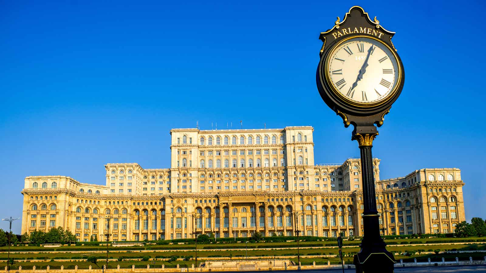
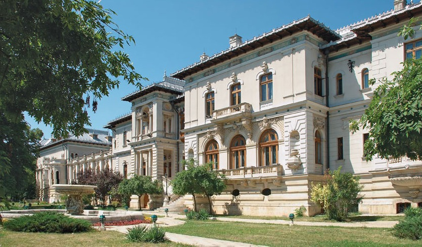

Urbea s-a dezvoltat treptat-treptat, coagulând în jurul vechiului centru istoric satele aflate împrejur. Dâmboviţa a fost un liant al aşezării urbane care şi-a căutat dimensiunile naturale, extinzându-se mai cu seamă spre nord, în zona lacurilor. Amintirea vechilor sate se păstrează şi astăzi în memoria bucureşteanului, căruia denumiri ca Berceni, Floreasca, Colentina sau Pantelimon îi sunt familiare ca zone componente ale capitalei.
În anul 1659, Bucureştii devin definitiv capitala Ţării Româneşti. Oraşul se dezvoltă, apar numeroase biserici, hanuri mari fortificate şi prima arteră pavată cu bârne din lemn, Podul Mogoşoaiei (1692), ulterior rebotezată Calea Victoriei în anul 1878.
În veacul al XIX-lea oraşul se modernizează fiind ales capitală a României, înfăptuită prin unirea Moldovei cu Ţara Românească, în anul 1862. In acea perioadă, este considerat cel mai mare oraş din sud-estul Europei după Istanbul. Apar pavajul, mai întâi din lemn, apoi din granit de Scoţia şi Sicilia, iluminatul, canalizarea şi parcurile publice. Spre sfârşitul secolului se trasează cele două axe, nord-sud şi est-vest care structurează oraşul. De altfel, domnia lui Carol I (1866-1914) este timpul marilor edificii reprezentative pentru urbea lui Bucur: Ateneul Român (1888), Fundaţia Carol I (1891), Ministerul Agriculturii (1894), Palatul de Justiţie (1890-1895), Palatul Poştelor (1894-1900), Palatul Sturdza (1899), Palatul CEC (1900), Palatul Patriarhiei (1907), Cercul Militar (1912), Hotelul Athenee Palace (1914) etc.
Primăria Capitalei administrează oraşul şi este condusă de un Primar General, iar Deciziile sunt aprobate şi discutate de Consiliul General alcătuit din 55 de consilieri aleşi. Din punct de vedere al suprafeţei, Municipiul Bucureşti este cel mai mic judeţ comparativ cu celelalte judeţe ale ţării, având cea mai mare densitate a populaţiei. Începând cu decembrie 2016, suprafaţa capitalei a fost actualizată de către Agenţia Naţională de Cadastru şi Publicitate Imobiliară, pe baza Planului Topografic de Referinţă al României în format digital (TopRo5), corespunzător scării 1:5.000, în conformitate cu prevederile Legii cadastrului şi a publicităţii imobiliare nr. 7/1996, cu modificările şi completările ulterioare. Astfel, Municipiul Bucureşti are o suprafaţă de 240 km pătraţi, din care, suprafaţa construită este de peste 70%.
Municipiul Bucureşti este aşezat în sud-estul ţării, acolo unde în urmă cu câteva sute de ani se întindeau Codrii Vlăsiei din care astăzi se păstrează câteva pâlcuri răzleţe de pădure. Râul Dâmboviţa traversează oraşul, iar salba de lacuri din nordul capitalei asigură răcoarea şi umezeala în timpul toridelor zile de vară. Cinstea care revine întemeietorului acestui oraş pare a fi disputată de către Bucur Ciobanul, candidatul tradiţiei şi legendei şi de controversatul Vlad Ţepes, omul primului document cunoscut, care atestă existenţa capitalei noastre la 20 septembrie 1459. În realitate, cercetările istorice şi în principal cele arheologice au scos la iveală vestigiile unei cetăţi, probabil prima, databilă încă din a doua jumătate a veacului al XIV-lea. Atunci se nasc Bucureştii şi în jurul acelei prime fortificaţii de 160 m.p., vor fi ctitorite rând pe rând Curtea Domnească, biserica lui Mircea Ciobanul (1558-1559), uliţele negustorilor şi meseriaşilor, într-un cuvânt oraşul politic şi cultural.
După primul război mondial (1914-1918), Bucureştiul devine una dintre cele mai frumoase capitale europene, strălucirea vieţii culturale şi sociale, atmosfera şi arhitectura aducându-i pe bună dreptate denumirea ”micul Paris”.
Bucureşti, oraş cu rang de municipiu (din 17 februarie 1968), cu statut de unitate administrativă aparte (asemănător judeţului), rămâne de-a lungul timpului capitala României şi, în acelaşi timp, cel mai important centru politic, economic, financiar-bancar, comercial, cultural-ştiinţific, educaţional, de trasnsport, informaţional, sportiv şi turistic al ţării. Populaţia cu domiciliu în Bucureşti, de peste două milioane de locuitori, îl poziţionează pe locul şase în ierarhia capitalelor din Uniunea Europeană.
În prezent, capitala are acelaşi nivel administrativ ca şi un judeţ şi este împărţită în şase sectoare.
Localizare geografică: Oraşul se află situat în S-SE României, în Câmpia Vlăsiei, la 54-90 m altitudine, pe râurile Dâmboviţa şi Colentina, la 60 km N de fluviul Dunărea, 120 K S de M-ţii Carpaţi şi 226 km V de Marea Neagră.
Populaţia: La 1 iulie 2017, erau înregistraţi cu domiciliul în Bucureşti 2.104.967 locuitori (9% din populaţia ţării), din care 981.183 de sex masculin şi 1.123.784 feminin, rezultând o densitate a populaţiei de 8771 loc./km2. Bucureştiul are un statut special în administraţia românească, în sensul că este singurul municipiu care nu aparţine niciunui judeţ.
Oraşul are o formă circulară, axele sale măsurând circa 24 km pe direcţia N-S şi circa 22 km E-V, fiind dispuse radial (în sensul acelor de ceasornic) astfel încât, fiecare să aibă în administraţie o parte a centrului oraşului. Între aceste limite, municipiul Bucureşti cuprinde şase sectoare administrative (numerotate cu cifre arabe, de la 1 la 6). Fiecare sector are propriul consiliu local format din 27 consilieri aleşi prin vot, propria primărie şi un Primar.